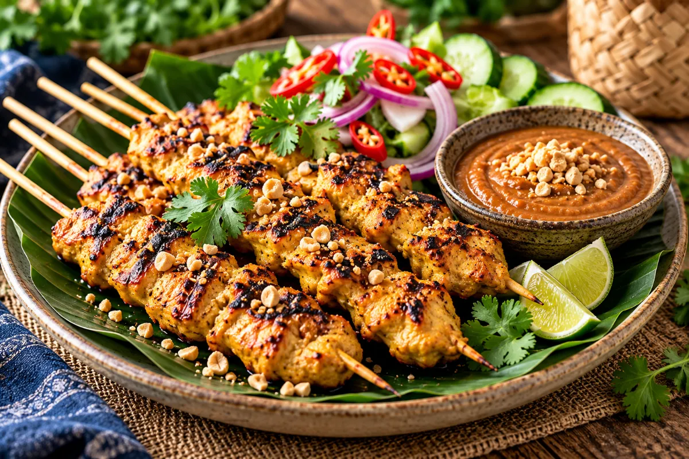
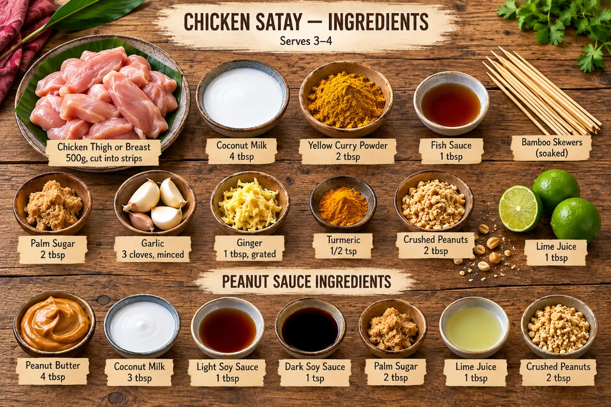

Chef Pirin’s Kitchen · Free recipe
Chicken Satay with Peanut Sauce
Golden grilled chicken skewers with a rich, creamy peanut dipping sauce


Serves3–4
Prep25 mins + marinating
Cook12–15 mins
HeatMedium-High
Ingredients
Chicken Satay with Peanut Sauce
- For the chicken satay
- Chicken thigh or breast, cut into strips500g
- Coconut milk4 tbsp
- Yellow curry powder2 tbsp
- Fish sauce1 tbsp
- Palm sugar2 tbsp
- Garlic, minced3 cloves
- Ginger, grated1 tbsp
- Turmeric½ tsp
- Bamboo skewers, soakedas needed
- For the peanut sauce
- Peanut butter4 tbsp
- Coconut milk3 tbsp
- Light soy sauce1 tbsp
- Dark soy sauce1 tsp
- Palm sugar2 tbsp
- Lime juice1 tbsp
- Crushed peanuts2 tbsp
Method
- Soak bamboo skewers in water for at least 30 minutes. Cut chicken into even strips.
- Combine coconut milk, curry powder, fish sauce, palm sugar, garlic, ginger and turmeric. Coat chicken thoroughly; refrigerate to marinate for at least 30 minutes.
- Thread chicken onto skewers. Grill or cook on a hot griddle over medium-high heat, turning regularly, until nicely charred and fully cooked. Chicken must reach 74°C (165°F) internally.
- For the sauce, gently warm peanut butter, coconut milk, soy sauces and palm sugar in a small pan. Stir until smooth, adding a little water if needed.
- Remove sauce from heat; stir in lime juice. Top with crushed peanuts and serve alongside the hot skewers.
Recipe method and cooking times are provisional and await Chef Pirin’s approval. Ingredient quantities are based on the illustrated ingredient boards.